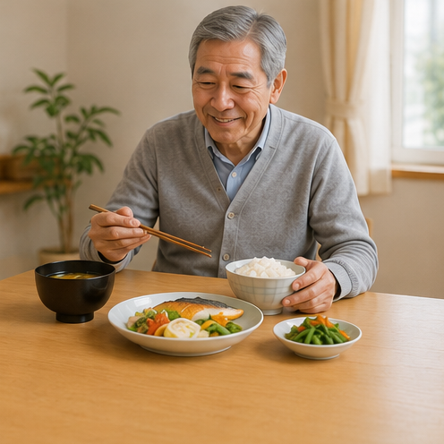

その「まさかの骨折」、
原因は栄養かも。
 BASE BREAD 公式商品画像
BASE BREAD 公式商品画像
医者に言われた。
「栄養が、偏っています」。
まずは朝のパン、ひとつ変えませんか。
骨づくりに欠かせない3つ。
カルシウム
ビタミンD
たんぱく質
33
種類の栄養素13.5g
たんぱく質／袋1/3
1日分の栄養／袋🦴 たった2袋で、1食に必要な栄養素の
ほとんどを100%以上カバー
ほとんどを100%以上カバー
いつもの朝ごはんを、
置きかえるだけ。

朝食シーン火も包丁もいらない。準備ゼロ分。
③ 買ったあとも安心
📦
ご自宅まで定期おとどけ
🔄
いつでも解約・お休みOK
☎️
電話で相談できる窓口
🛡️
不良品はすぐ交換・返金
★★★★★
朝のパンを替えるだけ。無理なく続いています。
70歳・男性
★★★★★
これ1つで栄養がとれる安心感があります。
68歳・女性
まずは、明日の朝から。
初回20%OFF
公式サイトで試す ▶
1食あたり 約156円〜
送料・しばりなし／いつでも解約OK